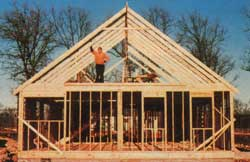
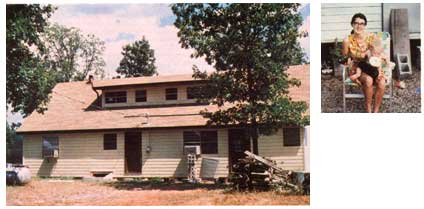

Ten years ago, when I discovered MOTHER, I found that I always read the Report From Them That's Doin' features first ... and I'd often think that I could write that sort of article. When I'd begin to get serious about composing a story, though, I'd stop short ... because I was uncertain as to whether my husband and I would end up staying in our rural home.
You see, we had-about four years prior to those musings-temporarily interrupted our college education ... moving from California to Oklahoma to "develop" a piece of property for my father. Actually, our motives had little to do with a yen to "get back to the land". We were simply tired of school and sick of smog. Furthermore, my dad was willing to pay someone to clear his land and make some permanent improvements-while I wanted to spend time with my grandparents (both in failing health), who lived on the adjoining property so, although Glenn and I had been raised in suburbia and had no experience with country living, we took on the task.
A LONGTIME "TEMPORARY" JOB
My folks bought an 8' X 30' travel trailer that served as our home for the first two years. When we outgrew that (because our son had been born), we cut pine on the property ... had it milled in a local sawmill ... and built an 18' X 24' frame cabin beside the trailer. We also constructed a block storage building and a pole barn ... cleared old fields by hand and fenced them ... hired a bulldozer operator to help us make several ponds ... bought Hereford cattle to raise for meat and to market ... kept Nubian goats for milk ... purchased chickens, ducks, and guineas ... planted an orchard and a small vineyard ... and made compost and grew a garden (both on a grand scale).
At any rate, I saw my first issue of MOTHER four years after entering rural life, and promised myself that I'd send her a report when I was certain we were going to stay, and when we were doing everything on our own. I was concerned, you see, because so many of those folks who did write their stories mentioned financial struggles. They often seemed to live on savings or work at off-farm jobs until they could "make the place pay for itself". On the other hand, we were earning a reasonable salary for "homesteading", and I knew there was no way that Glenn could have accomplished as much as he had in those four years (from 1969 to 1972) if he'd had to work another job. On top of that, neither the capital nor the plans for improving the property were ours. We were just hired help, and we had no illusions about the place's paying for itself in the foreseeable future. (It's still not self-supporting, and my parents will soon retire here on their pension.)
I felt, then, that we were doing it the "easy way" . . . that we weren't quite "playing by the rules". But, even though I didn't write my article back in 1972, 1 promised myself that I would work one up if Glenn and I were still country folks in ten years or so. However, I'd almost forgotten about that pledge until I read (in issue 74's Access column) the review of Nancy Poling's book Worms in My Broccoli. It seems that the Polings after a few years of a back-to-basics lifestyle-threw in the towel and returned to southern California, Cokes, and swimming pools. The reviewer commented that they seemed "to have given themselves very little room for compromise-or for progressing by stages-in trying to live out their dream".
Now that I thought, is exactly why we're still here 14 years after making our move. We have made compromises and progressed in stages ... and some of them were very gradual stages at that! Nevertheless, a lot did happen between 1972 (when I read my first issue of MOTHER) and 1980 (when we made a permanent commitment to country life by becoming landowners).
Starting in 1972, Glenn began to alternate working here on the farm with holding down low-paying jobs in town (while Dad saved the money he'd otherwise be paying my husband). During the next four years, my grandparents died, and our first daughter was born. Then, in 1976, Glenn quit the job he had in town to undertake our biggest project to date: building the 2,200-square-foot frame house that we now live in ... and that my parents will reside in when they retire. Once the dwelling was finished, a contractor inspected the plumbing for insurance purposes and ended up offering Glenn a job ... a position that he still has.
But, all along, we continued to toy with the idea of going back to college ... or of simply investigating different lifestyles in other areas. We took a return trip to southern California ... but found it even dirtier, noisier, smoggier, and more crowded than we remembered. So we started reading up on other parts of the country. We didn't feel as if we were accepting defeat or giving up our dreams, you understand, because we'd never made a permanent commitment to stay on the farm. In fact, every year or so my father would ask, "Well, do you folks want to try something else for a while?" And, each time, we'd say, "Not yet" . . . that is, until 1980.
MAKING IT PERMANENT
By that time, you see, we'd decided that we probably wouldn't be able to do any better elsewhere. (After all, making more money doesn't put you ahead if you have to spend more to live.) We also realized that our rural lifestyle would very likely be more secure in uncertain economic times than any other we could develop. Besides that, we'd come to like the way we lived, and we didn't really want to uproot our children. So we spoke to a realtor friend about our desire to buy "a small piece of acreage with enough cleared land for a garden and enough trees for fuel-with or without a house-at a reasonable price". And, within a very short time, we were landowners.
The parcel that we were offered consisted of 25 acres (which was more than we really wanted or could afford to pay cash for). We ended up taking 15 acres, letting some good friends of ours buy the other 10. And our little spread is everything we ever wanted! It has 5 acres of fescue pasture that just needs some lime spread over it to be in top shape ... and 10 acres of mature oak, hickory, and walnut trees (indicative of good soil), with enough black locust to fence the whole place. The well we had drilled provides an abundance of water. There's a view to the east ... a hill to the north to block winter winds ... a pond to water livestock ... and even a knoll sloping to the southeast upon which we'll eventually build a solar-heated house! What's more, much of our property has an ephemeral quality that I can only describe as "damp and woodsy", evidenced by ferns, mayflowers, jack-in-the-pulpits, and dozens of other woodland wildflowers. It's ideally located, too ... being only 8 miles from the town where the children go to school, and 16 miles from a state university. (We probably won't go back to college ... but our oldest child will be 18 in less than six years!)
Since we bought the property, we've had it surveyed ... cut fenceposts and built fences ... broken ground for a garden ... planted fruit trees, grapes, and asparagus ... cleared a spot for a mobile home ... and cut a right-of-way for electricity, which was just installed. By the time my parents retire (a year from now) and are ready to move into the house we built on their land, we should have finished a well house/storage building, built a permanent road, installed the septic and gray-water systems, dug another pond, and set up a used mobile home in which we'll live until we have the time and money to build our dream house. (We have, as you see, learned to progress in stages.)
In fact, our work has gone even more slowly this time than it did 14 years ago, but what we've lost in working time, we've gained in patience, knowledge, and skill. We have a fairly clear idea of what we want to do and of how to do it. And, in the course of our "learning" years, we've had a chance to determine which enterprises lead to success and bear repeating, and which ones lead to failure and should be avoided. We'll have a cow to provide us with milk and butter, for example, and her excess milk will nourish at least two calves, which we'll either butcher or sell before it's time to feed them hay each winter. We'll keep a dozen light-breed hens for eggs, and each summer when the grasshoppers are plentiful-we'll raise 100 heavy-breed cockerels for meat. We also plan to heat with wood, and to recycle our gray water into the garden.
We wont, however, raise goats (we've found them to be too much trouble for too little return) or beef cattle (unless we get more acreage) or ducks (too messy) or guineas (ours haven't really made good .'watchdogs", but they do squawk all the time). We probably won't make compost (the chickens can do that), and I won't try to turn excess milk into cheddar cheese again. (It's easier and more foolproof to use it as feed to produce veal and fryers.)
I won't try to bake all of our bread, either, since I can now-unlike 14 years ago-buy 100% whole wheat loaves. And I hope never again to have to use an old-fashioned outhouse ... pull water from a well with a two-gallon bucket ... or wash my clothes outside in a wringer washer. In other words, we've learned how to compromise and allow ourselves some conveniences ... while maintaining a position from which we could forego such "luxuries" if it were ever necessary.
We also hope to try some things we've never done before ... like building an earth-bermed, passive-solar home with an attached greenhouse and cool-tubes in place of air conditioning. (MOTHER's Eco-Village house provided some of our inspiration.) We also want to try intensive gardening in raised, mulched beds.
And we really don't plan to be able to "break away from the nine-to-five routine" . . . a wish that's been expressed by many folks writing to MOTHER. We're realistic enough to know that full-time farming takes a lot of land, money, knowledge, and-since farmers are at the mercy of the weather-luck. Therefore, most of the responsibility for the cow, chickens, and garden will fall on the children and me, while Glenn will keep his job. (He's now a licensed plumber with flexible working hours.)
MAXIMS MAKE IT EASIER
Over the years, we've developed our own mottos, though they're very different from the Polings' facetious, "Never do things the easy way." Early on, we found ourselves saying such things as, "Well, at least it's better than it was Not bad for a novice" . . . and
"Nobody's going to look closely enough to notice that." At other times, it was, "No more temporary fences!" (electric ones break easily and start fires in dry grass) and, "If I'd done this right the first time, I wouldn't have to do it over."
And lately, as we work Sundays and odd evenings, we repeat a maxim we borrowed from another homesteader: "You can eat an elephant ... if you do it one bite at a time." But my favorite family saying was born out of my frustration and my husband's sense of humor one hot, sticky day about 12 years ago. Our first calf had died about an hour after birth ... varmints had carried off most of my young fryers (no more temporary chicken coops!) ... and the worst drought in years had burned my garden to a cinder and turned the soil to concrete. Glenn found me crying and asked what was wrong.
"Everything!" I wailed. "Nothing I do comes out right! Everything I touch turns to chicken manure!" (That's not exactly the expression I used, but you get the idea.)
"Man, I wish it did!" he replied. "I'd strap you to the back of the tractor and drive all over that bottom field, hollering, 'Keep your fingers in the dirt, honey!' . . . and we'd end up with the richest soil around." I laughed with him then ... and many times since, we've reminded each other that "if everything you touch turns to manure, keep your fingers in the dirt".
I'm not sure what the moral of that is ... maybe nothing more than that a lifestyle like this takes some perspective, and an ability to laugh at oneself.
Furthermore, perspective is one thing we have a lot more of now than we did 14 years ago. As I've watched other back-to-the-landers come into this area during the past few years, I've decided that we didn't do things the "easy way'.' after all. Most of the newcomers seem to have some advantages that we didn't ... know-how, for one thing (book knowledge, at least) ... and often established, marketable job skills supported by a stash of operating capital (usually equity from city houses that they've sold). And some of them have accomplished as much in three or four years as we have in 14 ... at least in terms of material improvements and the like.
Well, if we had it to do over again, and if we had known for sure from the beginning what we wanted to do, we may have done it their way, too. But I wouldn't have been able to spend time with my grandparents during the last years of their lives, and our children most likely would have been raised in the city while we saved for our move. I guess the important thing is that we're still here!
EDITOR'S NOTE. For another update on old-time back-to-the-landers, turn to page 170.
|
 Above: Each homesteading step brings its own satisfaction...here Glenn celebrates finishing framing-in Dad's house. |
 LEFT: This is the complete version! ABOVE: If we'd known from the start tht we'd end up staying in the country, we'd have done things a bit differently, but we probably wouldn't have been any happier. |
|